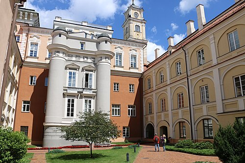

This map shows 19 of the most-searched sights in Vilnius as photo spots, ranked by how often people search for them: Vilnius University, Gediminas' Tower, Užupis, Vilnius Cathedral and Gate of Dawn lead the list. Every spot has a pin on the subject and a phone icon showing where to stand, with tips for shooting it on your phone: which lens to use, how to frame it, a settings tip and the best time of day. Directions and Navigate buttons take you to the standing point on foot or by public transport. 3 spots are free to view; the full map is for members.
The 3 free photo spots
1Vilnius University

Vilnius University is the oldest and largest university in Lithuania, and on the map it works as a whole cluster of university grounds rather than a single building. The outline of the site is about 300 metres across, so there is plenty to explore on foot. It was founded in 1579 as the Jesuit Academy of Vilnius by Stephen Báthory, which makes it one of the older universities in Central and Eastern Europe. It was closed after the failed November Uprising of 1830–1831 and did not reopen until 1919. Today more than 23,000 students study here, and the university also runs a library, a museum and botanical gardens. For a phone photographer the appeal is the sense of age and scale: long façades, passages and open courtyards where you can include people walking through to show size. Take a few wide frames to set the scene, then move closer for doors, windows, stonework and signs. Walk slowly and look for places where one building frames another. Keep the phone level, use the gridlines to keep vertical walls straight, and check for passing students or visitors before you press the shutter. This is a working university, so respect any signs and access rules.
Where it is: In Vilnius, Lithuania's capital, where the university buildings and grounds spread over an area about 300 metres across.
Shooting it on your phone
Lens: Start with the default lens (1x) for a natural view of the buildings. Switch to ultra-wide (0.5x) if you are close and want a whole façade or courtyard in one frame. Use telephoto (2x-5x, depending on your phone) for architectural details and for pulling distant doorways or windows closer.
Where to stand: Stand right at the subject (inside the Grand Courtyard, facing the St John's Church facade and bell tower). The church facade and bell tower framed by the arcaded courtyard, with the observatory tower and its zodiac frieze in view. Walk a little closer along the way to find clean frames of the façades.
Framing: Turn on gridlines and line up the edges of the buildings with the vertical lines so they stay straight. Include an archway, passage or a person at the edge of the frame to give a sense of scale. Take one wide shot and one close detail shot of each part you like.
Settings tip: Tap on the brightest wall to set focus, then slide the exposure down slightly so pale stonework keeps its texture and the sky does not wash out. In shaded courtyards, tap on a darker area instead and let the phone brighten the scene.
Best time: Early morning or late afternoon usually gives softer light and fewer people. Soft overcast days also suit the walls and courtyards well.
2Gediminas' Tower
Gediminas' Tower is the surviving part of the Upper Castle, standing on top of Gediminas Hill above Vilnius Old Town. It is a short, sturdy brick tower of three storeys, and it has become a symbol of both the city and Lithuania. It appeared on the old litas currency, and the national flag was raised on it again on 7 October 1988. The first wooden fortifications here are linked to Grand Duke Gediminas, and the first brick castle was finished in 1409 under Grand Duke Vytautas. The tower you see today was rebuilt in 1933.
It photographs well for two reasons. The tower itself makes a strong, simple shape against the sky, and the hilltop gives you a lift above the rooftops of the Old Town. The viewing platform also looks towards the modern business district, so one visit gives you both an old and a new Vilnius in the frame.
The phone icon on the map is right at the tower, so this is the place for close shots of the brickwork and the walls, and for looking out from the hill. Take a few steps back along the hilltop to fit the whole tower in, then go up to the platform for the panorama. Wipe your lens first, as phones pick up smudges easily, and keep your thumb clear of the edges when shooting wide.
Where it is: Gediminas' Tower stands on top of Gediminas Hill in Vilnius, overlooking the Old Town. The rebuilt Royal Palace of Lithuania is near the base of the hill.
Shooting it on your phone
Lens: Use the ultra-wide (0.5x) for close shots looking up at the tower. Use the default lens (1x) for the tower with some sky around it and for general views from the hilltop. Use telephoto (2x-5x, depending on your phone) to pick out Old Town roofs and towers from the platform.
Where to stand: Stand right at the subject: the phone icon on the map marks the spot. From here the tower is right beside you, so you can shoot its walls and the view out over the city. For a full-length shot of the tower, step back along the hilltop.
Framing: Turn on gridlines and keep the tower's vertical edges parallel to the vertical grid lines. When shooting upwards, don't tilt the phone too far, or the walls will lean inwards. From the platform, put the Old Town rooftops in the lower third and leave the sky above. Choose one clear subject, such as a spire or a distant street, rather than trying to fit everything in.
Settings tip: Tap on the brickwork to focus. Then slide the exposure down a little if the sky is washing out. For the wide view over the city, try panorama mode and move the phone slowly and steadily.
Best time: Late afternoon or early evening usually gives softer, warmer light on the brick. Earlier in the day or on weekdays the hilltop is likely to be quieter.
19Church of St. Johns, Vilnius
St John's is the big Baroque church at the heart of the Vilnius University buildings in the Old Town, and its white bell tower is the real star for photographs. The tower is 69 metres tall, which makes it the tallest building in the Old Town, so it shows up above the rooftops from many streets. The church itself is older than its looks suggest. A Gothic parish church was finished here in the 1420s. After a fire in 1737 the architect Johann Christoph Glaubitz gave the front the flowing, wavy lines now seen as typical of Vilnius Baroque, and the tower was raised higher at the same time. The Jesuits received the church in 1571, and it became part of the university that grew from their college. It still hosts services in Lithuanian and concerts. For a phone photo, the challenge is height: the tower and church sit close together among narrow streets, so you need to tilt your view upwards without losing the shape. Stand in the street, find the tower rising behind the church's side, and use the gridlines to keep the edges upright. Move a few steps until the tower sits clear of wires and signs. If you want a second shot, the university courtyard shows the main front and tower together, and Pilies gatvė shows the side of the church along the old street.
Where it is: In the Old Town of Vilnius, within the Vilnius University ensemble. The viewpoint is on the small Šv. Jono gatvė, which runs off Pilies gatvė.
Shooting it on your phone
Lens: Start with the ultra-wide (0.5x) to fit the tower and the church together in a narrow street. If you can step back, try the default lens (1x) for a more natural shape. The telephoto (2x-5x) is good for the top of the tower.
Where to stand: Stand on Šv. Jono gatvė. The bell tower rising from the street, seen from the side with the church alongside it. The church is a short step to the north. Vilnius University Great Courtyard is an alternative: the Baroque front of the church is on one side, with the tall tower beside it.
Framing: Turn on the gridlines and line the tower's edges up with the vertical lines so it doesn't lean. Keep some street at the bottom so the tower looks like it rises from it. For an alternative, Pilies gatvė shows the church's southern side, with its surviving Gothic windows, along the old street.
Settings tip: Tap the white tower to focus, then slide the exposure down a little so the sky stays blue and the white walls keep their detail. Hold the phone level to avoid a leaning tower.
Best time: Choose a time when the sky is bright but the street is not crowded; early morning is usually quieter. Soft, even light on a bright overcast day suits the pale tower.
16 more spots for members
These spots are on the map as grey numbered pins. Where to stand, the phone tips, photos and directions for them come with Explorer membership.
- 3Užupis · members
- 4Vilnius Cathedral · members
- 5Gate of Dawn · members
- 6Palace of the Grand Dukes of Lithuania · members
- 7Museum of Occupations and Freedom Fights · members
- 8Church of St. Anne · members
- 9Three Crosses · members
- 10Cathedral Square, Vilnius · members
- 11Pilies Street · members
- 12Town Hall, Vilnius · members
- 13Bernardine Garden · members
- 14Gediminas Avenue · members
- 15Church of St. Peter and St. Paul, Vilnius · members
- 16Literatų Street · members
- 17Church of St. Catherine, Vilnius · members
- 18Cathedral of the Theotokos, Vilnius · members
Get every spot with Explorer membership
Explorer opens every spot on every map in the library: where to stand, how to frame it on your phone and how to get there, plus the Xdatrys Maps app with maps saved on your phone for use without signal. $9.99 a month or $59.99 a year; cancel any time.
Join Explorer Compare free and Explorer
Not ready to join?
Get Pocket Lens, our free daily smartphone travel photography newsletter.
Free, and you can unsubscribe at any time. If the form does not show, sign up on our newsletter page.
Questions
What are the top photo spots in Vilnius?
The first three on this map are Vilnius University, Gediminas' Tower and Užupis. They are ranked by how often people search for them. The full map has 19.
Where should I stand to photograph Vilnius University?
Stand right at Vilnius University (inside the Grand Courtyard, facing the St John's Church facade and bell tower). Start with the default lens (1x) for a natural view of the buildings.
When is the best time to photograph Gediminas' Tower?
Late afternoon or early evening usually gives softer, warmer light on the brick. Earlier in the day or on weekdays the hilltop is likely to be quieter.
How do I get to St. Johns' Church?
No Underground, train or tram stop is listed for this spot, so head for Vilnius Old Town and find Pilies gatvė.
Credits
Map data © OpenStreetMap contributors (ODbL); base map built with Protomaps from OpenStreetMap data. Photos from Wikimedia Commons, credited under each photo with their licence. Background reading for the free spots: Vilnius University, Gediminas's Tower, Church of St. Johns, Vilnius (Wikipedia, CC BY-SA). Access rules and opening times change: check before you go.